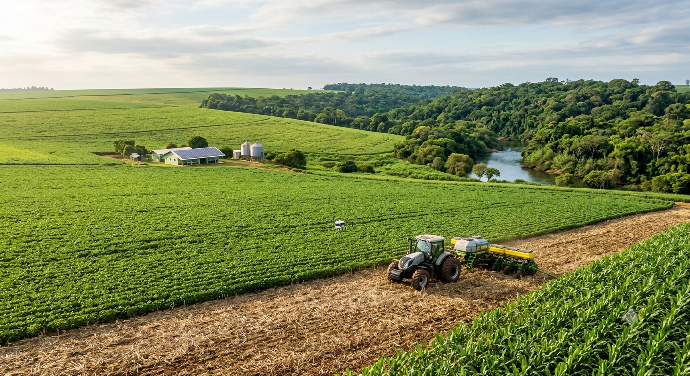

O Equilíbrio entre produção e Conservação
O agro moderno une produtividade e sustentabilidade: tecnologias como a agricultura de precisão e o plantio direto provam que é possível abastecer o mundo e, ao mesmo tempo, preservar o meio ambiente.
Conhecer Solução
class="titulo-solucao">EcoCrop a solução
class="Criamos um ecossistema digital que conecta sensores IoT (Internet das Coisas) instalados no solo diretamente ao celular do produtor.
- class="lista-solucoes">
- Àgua na medida certa O sistema avisa o momento exato de irrigar.
- IA de proteção Algoritmos identificam pragas por fotos antes que elas se espalhem, reduzindo o uso de defensivos químicos.
- Carbono Zero Monitoramento que ajuda a manter o solo saudável para absorver mais CO₂ da atmosfera.